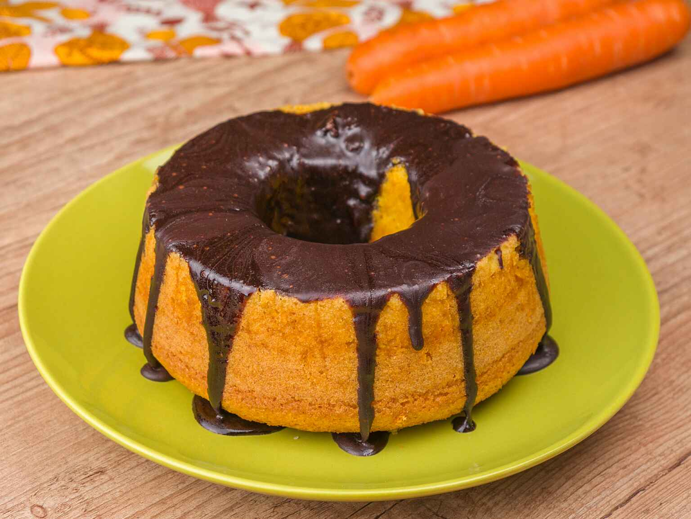
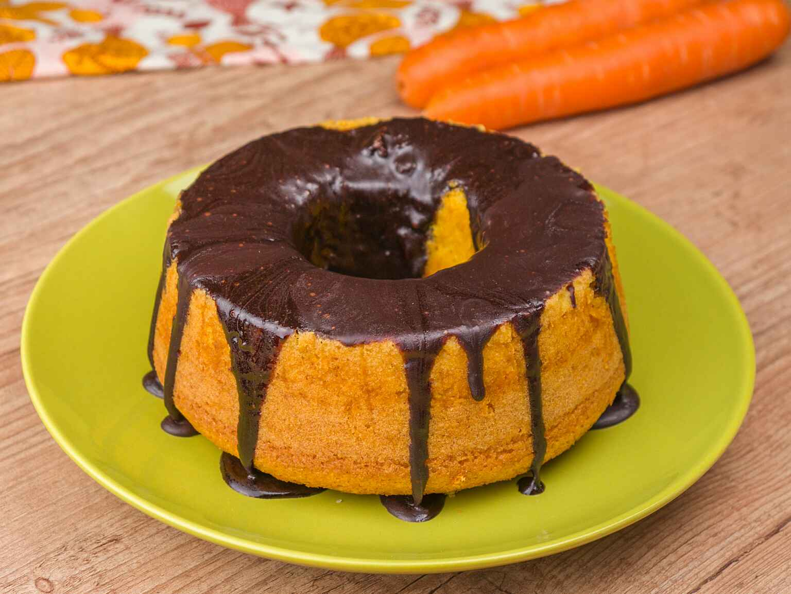

Ingredientes
Para o bolo vamos precisar de:
- 75g de cenoura
- 1 ovo
- 90g de açucar
- 60ml de óleo
- 90g de farinha de trigo
- 5g de fermento químico em pó
Para a cobertura vamos precisar de:
- 45g de açucar
- 20g de chocolate em pó
- 10g de manteiga
- 30ml de leite
Modo de Preparo
Massa
- Coloque em um processador ou liquidificador a cenoura, o ovo, o açúcar
e o óleo e bata bem
- Junte a farinha de trigo e o fermento químico e misture com uma espátula
- Transfira para uma forma de furo central untada e enfarinhada de 16 cm de diâmetro
- Coloque a forma na airfryer a 160°C por apenas 16-17 minutos ou até que o palito saia limpo
Cobertura
- Em uma panela pequena coloque todos os ingredientes da cobertura e
deixe no fogo baixo sempre mexendo
- Quando ferver deixe por 1-2 minutos e desligue o fogo
Montagem
- Desenforme o bolo de morno para frio e coloque a cobertura morna
Tempo de preparo total
25 mins
 
